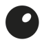

Ceramic provocations and bold relief canvases, in forms and stories rarely seen in clay.
Our works live in restaurants, country houses, clinics and galleries, and have been to Venice Design Week.
Urbans — over twenty ceramic characters, each with a story of its own.
Every piece is made by hand, and no project is too complex for the studio.
Dirty Hands
Designer and entrepreneur, one of the two founders of DirtyHands.
Pairs professional design with artistic intuition to bring unconventional ideas to life.
Karen
Co-founder, Dirty Hands
Designer and entrepreneur, co-founder of DirtyHands together with Karen.
Sees ceramics beyond plates and pots, as objects that shape the mood and character of a room.
Lisa
Co-founder, Dirty Hands
Clay with something to say
We create original design pieces — from tabletop art objects and wall panels to sculptural forms and interior accents that enhance spaces and set their emotional tone.
- RPA Awards01
- ADD Awards02
- Kandinsky Prize03
- Art Zverev Prize04
Our projects
Brera
AVA
The Greeks
Novikov
Rodina
RestaurantA ceramic triptych at the very centre of an Italian restaurant.
Two large panels, below and above, over a kitchen open to the guests.
Restaurant RestaurantSmooth, rounded slabs like Mediterranean stones on three sides of the bar.
Half-round ceramic panels on the columns, and planters for several pots.
RestaurantUnconventional
ceramic
forms
A film about the studio, from clay to kiln.
Story
The studio opens
Lisa and Karen start DirtyHands, a studio of art ceramics made by hand.
The panel
The first works shown: large panels, which become the studio’s signature.
Venice Design Week
The first project abroad: the Gymnastics panel and the Urbans at Galleria S. Eufemia.
Awards
Art objects at RPA Awards, ADD Awards, the Kandinsky Prize and the Art Zverev Prize.
The Elements
The Elements: ceramic coffee tables after the forces of nature.
Homes
Furniture for a film producer’s family home, and the Gold Edition evening.
Art in the Hands
Art in the Hands opens: a gallery, and a place for lessons in clay.
Today
A studio, a gallery and a place for lessons and evenings; commissions of any scale.
More → Made by
Skip DesignWith love for Dirty Hands ♥
Thanks to Contrast Foundry
for the wonderful fonts